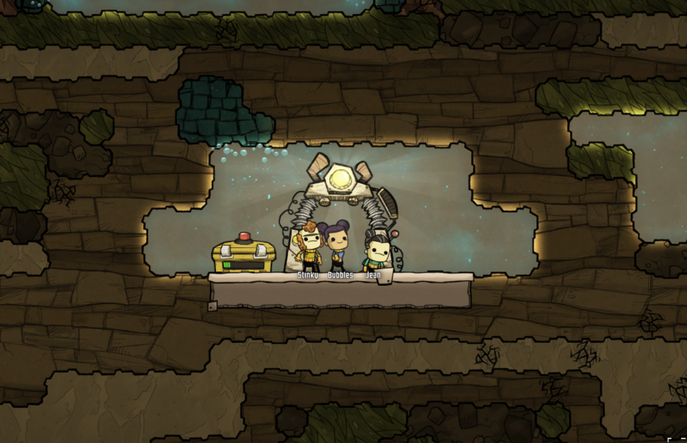

Oxygen Not Includedゲーム超序盤の進め方
Oxygen Not Includedゲーム超序盤の進め方
超序盤における目的
- トイレの整備
- 研究施設の整備
- 寝場所の整備
- 酸素供給施設の整備
- 食料生産施設の整備

トイレの整備
トイレがないとDuplicant達はその辺りで漏らしてしまう。漏らすと色々問題が出てくる。Duplicantを水たまりのあるところに歩かせるとSoggy Feetというマイナスバフがつくし、それを回避するために掃除をしなければいけない。さらに掃除をしようがしまいが、汚染水からはPolluted Oxygenが発生する。あと、キレイな水に混ざると色々と面倒くさい。とにかく良いことがないのでトイレは確実に整備すべきだ。
Duplicant達は最初のサイクルではトイレを使わずに過ごせるが2サイクル目には漏らしてしまうので、それまでには最低一個のトイレを作る必要がある。
トイレには2種類、OuthouseとLavatoryがある。Lavatoryは基本メンテ不要なので便利なのだが、Outhouseはいわゆるくみ取り式便所なのでメンテがいる。しかし最初はOuthouseで充分だし、そもそもLavatoryは作れないのでOuthouseを作るわけだが、注意点がいくつかある。
トイレの数
まずはトイレは必ず複数個用意すること。トイレが一個しかないと気づいた時にトイレが使用不可だと色々悲しい事が起こるのと、対処するのにまた時間がかかる。個人的なお勧めとしては、トイレは一旦緊急用として1個だけつくるにしても、最終的には3個作れるだけのスペースを用意してそれだけの数を作るべきだ。
この際トイレ部屋というものを作る。「部屋」はそれぞれ目的ごとに一定の条件があって、それを満たしていれば部屋として認定される。ONI内では設置物の基本機能以外にボーナスをつけてくれる。例えば、トイレ部屋はDuplicant達のモラルをあげてくれる。
まず部屋は完全に壁とドアで囲まれた空間である必要がある。壁はまだ掘削されていないブロックでも問題ない。トイレ部屋は トイレがひとつ以上と後述の洗面台がひとつ以上があり、部屋の大きさが12以上、64までである必要がある。さらに、発電機等の機械類が置いてあってはいけない。この条件を満たしていれば Duplicant達はこのトイレを使うとモラルがあがる。
トイレ部屋の位置と洗面台の設置
また、トイレを作る時には洗面台を設置するべきだ。
トイレを使用した後のDuplicantはバクテリアにまみれていて、そのままの状態で調理をしたり、キレイな水の中にDuplicantを行かせたりすると食あたりを起こす病原菌が広がってしまう。
これを防ぐためには洗面台を設置する。トイレと同じで洗面台もメンテナンスが必要なものとそうでないものがあるが、最初はWash Basinで充分だ。なのでトイレ部屋を作る際にはトイレを三つ、そしてできれば三つ、最低でも二つWash Basinを作ろう。
この際、Duplicantの移動方向が重要になるので、トイレ部屋は一方通行にする。そして、出口側にWash Basinを作る。こうすると、トイレを使ったDuplicantは必ずWash Basinを使わないとこの部屋から出られない。このような部屋を作るには基地の端の方にトイレ部屋を確保すると便利だろう。
なお、Wash Basinの上には矢印がついていて、「この方向に行くときだけ、Wash Basinを使う」という設定ができるので、出口方向にDuplicantが移動する時だけWash Basinを使う事になる（デフォルトの状態では、どちらの方向に移動しても手を洗っていくので、ムダに手を洗うことになる）。
研究施設の整備
今回の解説の中で重要な食料確保の準備をするためにはまず「研究」をしないといけない。研究をしないとこのエントリの最後で必要となるプランターが手に入らない（そして食料の確保は時間との戦いなので、この研究は真っ先にすすめるべきものの一つだろう）。
研究をするためにはResearch Stationが必要で、Research Stationを使うには水と電気が必要となる。水を確保するには、Pitcher Pumpを設置する必要がある。電気はManual GeneratorでDuplicantを走らせれば間に合うが、それだとDuplicantが走ってる間しか機器が動かない事になるので効率が悪い。
特にResearch Stationは60Wしか使わないので、400Wの出力があるManual Generatorはムダなのだ。この余分な出力を使わない手はない。そこで一番簡単なのは電池をつなげることだ。電池をつなげた状態で余剰出力があればその分蓄電することができるのでDuplicant達が走り回る必要がない。最初は小さな電池しかないのでムダも多いが、とりあえずは充分。
寝場所の整備
寝場所を確保しないと、Duplicant達はその辺りで寝てしまう。ただ、そのままにしておくと、Duplicant達はSore Backというマイナスバフがついてしまうのと、モラルを寝ることにより回復できない。なのでベッドも必ず作らないといけない。
ベッドも部屋を作る事によってボーナスがあるので、なるたけ早めに部屋を作るべきだ。最初はBarrackという部屋を作る。Barrackは複数人分のベッドを入れた部屋なので効率よくDuplicant達を押し込める。
酸素供給施設の整備
序盤の酸素供給はAlgae Deoxydizerを使う。Algaeは掘らなければいけないし、掘り尽くしたら終わってしまうので、気をつけなければいけないけど、序盤はこれで充分。基地の大きさにもよるけど、１〜2個でとりあえず足りるはず。
ただし、この機材から供給される酸素は30℃なので、この後説明する食料生産にも影響するので気をつけること。
食料施設の整備
ゲームが始まった瞬間最初の食料は、Ration Boxに入っているいくばくかのNutrient Barと、その辺りにあるMuckrootになる。
そこで食料を栽培する必要があるのだが、栽培のための設備が当初はないので研究をすすめる必要がある。とりあえず欲しいのはPlanter BoxなのでBasic Farmingを研究しよう。
Planter Boxによる栽培
Planter Boxが作れるようになったら、必要な数を作ってMealwood Plantを植える。一人のDuplicantが一日に必要なカロリー（1000kcal）を調達するためにはMealwood Plantが5本必要となる。Mealwood Plantは600kcal提供できるMeal Liceを作るのに3サイクルかかる。つまり1日約200kcal提供できるわけだが、これを1日1000kcalにするには5本必要というわけ。
Mealwood Plantを栽培するには水とDirtが必要になる。水はResearch Station用にも必要なのでこの時点ですでに準備ができているはずだろう。土も最初はいくらでもその辺から掘れるが、この時点ですでに用意をしておくとよいのがCompostだ。
Basic Farmingの研究ができると同時にCompostも利用可能になる。Compostは腐った食料や汚染土を使ってDirtを作れる。これを使ってさらにMealwoodの栽培にまわせるわけだ。
食料生産に向けた温度管理
Mealwoodに限らずすべての植物は栽培可能な温度が決まっている。Mealwoodの場合は10℃から30℃までの間なので、この温度をキープしないといけない。最初のうちは問題ないのだけど、これがだんだんと問題になるので、それを見据えて、食料生産ベースを作成しよう。
まず、マップからヒートオーバーレイを使って、温度を確認する。赤いところの近くにPlanter Boxを作成するとじょじょにまわりが熱くなっていくので、これを冷ます処理をしないといけない。このゲームでは寒い場所を暑くするのは簡単なのだが、暑いところを寒くするのには時間とエネルギーが必要となるので、とにかくまず暑い場所を避けよう。すでに暑くなくても、電池の近くや発電施設の近くだとすぐに暑くなるのでそれも避ける。
とにかく最初は暑い場所を避ける事。もし可能なら、基地のまわりにIgneous RockでInsulated Tileのバリアを作成するべきだけれども、それはもう少し先のことだろう。とにかく、その辺りを気にかけつつ、Planter Boxを設置しよう。
次のステップ
とりあえずここまでできれば、いきなりDuplicant達が全滅するということはないはず。ただし、最初はとにかく時間との勝負なので忙しいです。がんばってください！
この次は探索と食料生産の増設、エネルギー源の確保などが必要になります。